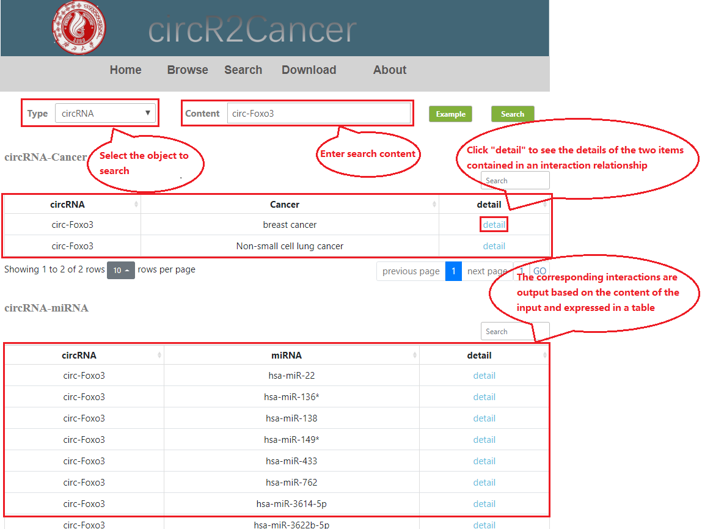
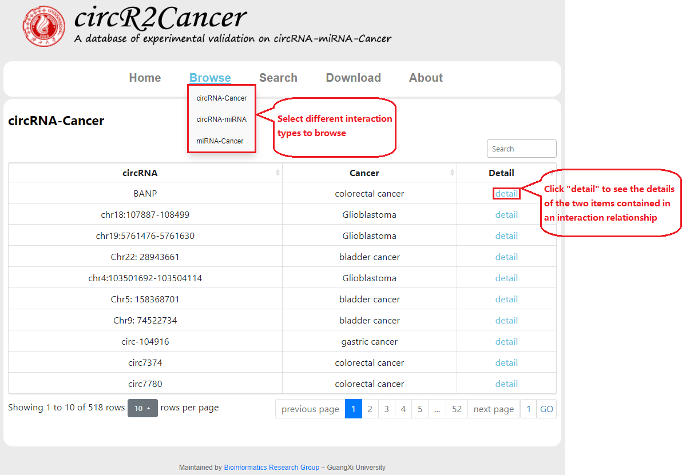
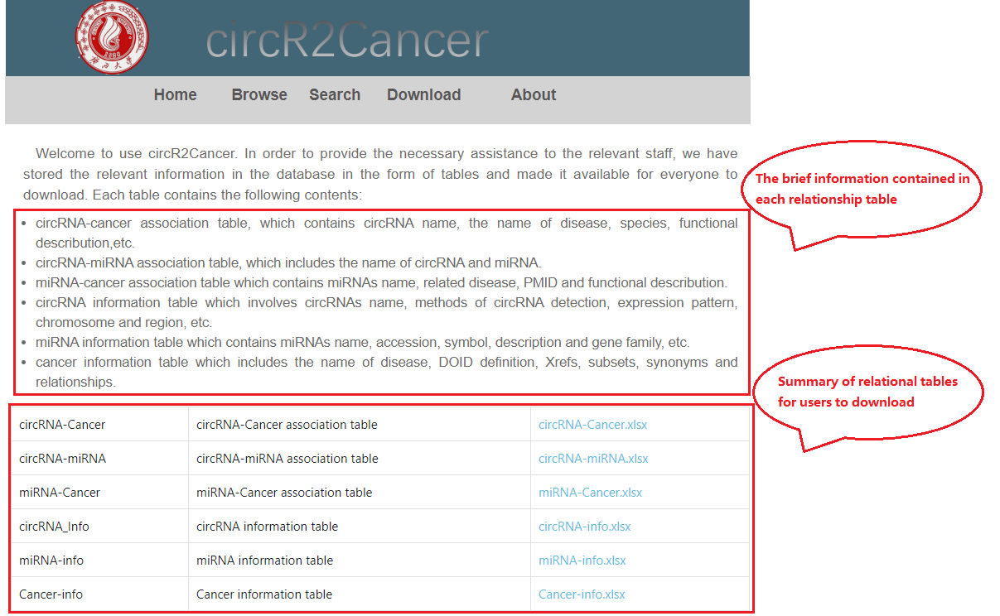

Welcome to use circR2Cancer, which provides a large number of circRNA-cancer
associations, miRNA-cancer associations and circRNA-miRNA associations to users. In this section, we
introduce instructions to you, such as search, browse and download. We hope it will help users to
use the website better.
1. Search
The circR2Cancer database integrates three kinds of relational data, namely circRNA-cancer
associations, miRNA-cancer associations and circRNA-miRNA associations. When the users want to search
for one of them, users should go to “Search” page. First select the data type by which the user can
search through three different data types. The interaction is then obtained by entering the
corresponding data according to the selected data type. For example, when the data type selected by the
user is circRNA, the user needs to enter the corresponding circRNA in the text box. Then click "search",
some of the cancers and miRNAs associated with the input circRNA will be presented to the user as a
table, respectively. When the user does not enter the content before clicking "search", a prompt is sent
to remind the user to enter the content before searching for the interaction. When the user enters an
invalid character before clicking "search," a prompt will also appear asking the user to enter the
correct character.

2. Browse
The circR2Cancer database contains three types of relational data: circRNA-cancer
associations,
miRNA-cancer associations and circRNA-miRNA associations. Each relational data will be presented to
users as a table. What’ more, users could gain detailed information about circRNA, miRNA and cancer.

3. Download
In order to facilitate user capture and utilize relational data, we store the three
kinds of relational data in the form of EXCEL, please click to download if necessary.

4. Contact us
If you have any suggestion or question about our database, please contact us: Dr. Chen at qingfeng@gxu.edu.cn and Dr. Lan at lanwei@gxu.edu.cn.